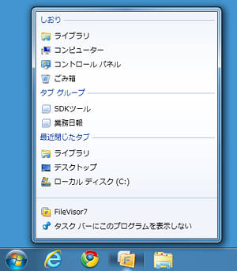

よく利用するフォルダやタブ グループを登録できます。
また、コピーや移動の際の宛先指定ダイアログボックスでしおりに登録されたフォルダを選択することもできます。
| 左クリック | そのフォルダの表示名称をインプレース編集します。 |
| 右クリック | そのフォルダの編集メニューを表示します。 |
| 左ダブルクリック | そのフォルダを現在のタブで開きます。 |
| Ctrl+左ダブルクリック | そのフォルダを新しいタブで開きます。 |
| Alt+左ダブルクリック | そのフォルダを新しいウィンドウで開きます。 |
| ドロップ | しおりの登録フォルダにドロップすると、
ドロップされたファイルオブジェクトをそのフォルダにコピーします。
コピーではなく、移動をおこなうにはShiftキーを併用してドロップします。
パネルの空き領域へフォルダがドロップされれば、 そのフォルダがしおりに追加登録されます。 |
| Alt+ドロップ | Altキーを併用してドロップすると、 ドロップした位置にある登録済みのフォルダの前に新しく挿入登録されます。 |
| Enter | 選択しているフォルダを現在のタブで開きます。 |
| Ctrl+Enter | 選択しているフォルダを新しいタブで開きます。 |
| Alt+Enter | 選択しているフォルダを新しいウィンドウで開きます。 |
| Del | 現在選択しているフォルダを削除します（削除確認のメッセージが表示されます）。 |
| Ctrl+↑ ↓ | 現在選択しているフォルダをひとつ上／下のオブジェクトと順序を入れ替えます。 |
Windows7をご利用の場合、タスクバーのFileVisorアイコンをマウス右ボタンでクリックすると表示されるジャンプリストに FileVisorのしおりに登録したフォルダをリストアップします。 ジャンプリストの下位にある「タスクバーにこのプログラムを表示する」を選択して タスクバーにFileVisorを表示させる設定にしておくと、FileVisorアイコン右クリックからしおりに登録されている フォルダをを指定して起動することができます。
